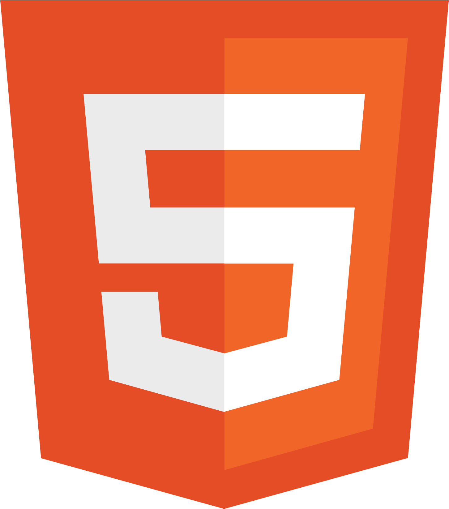
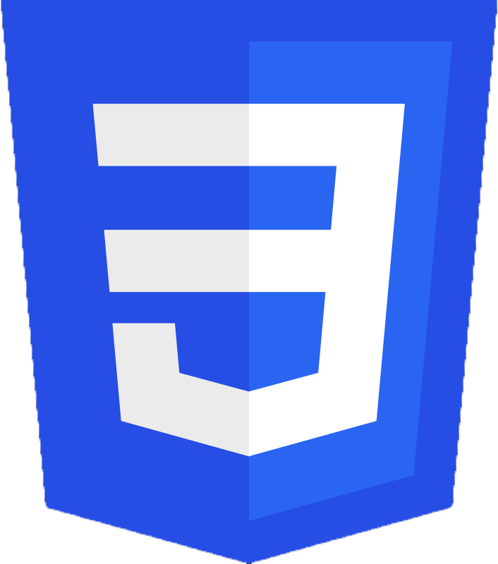
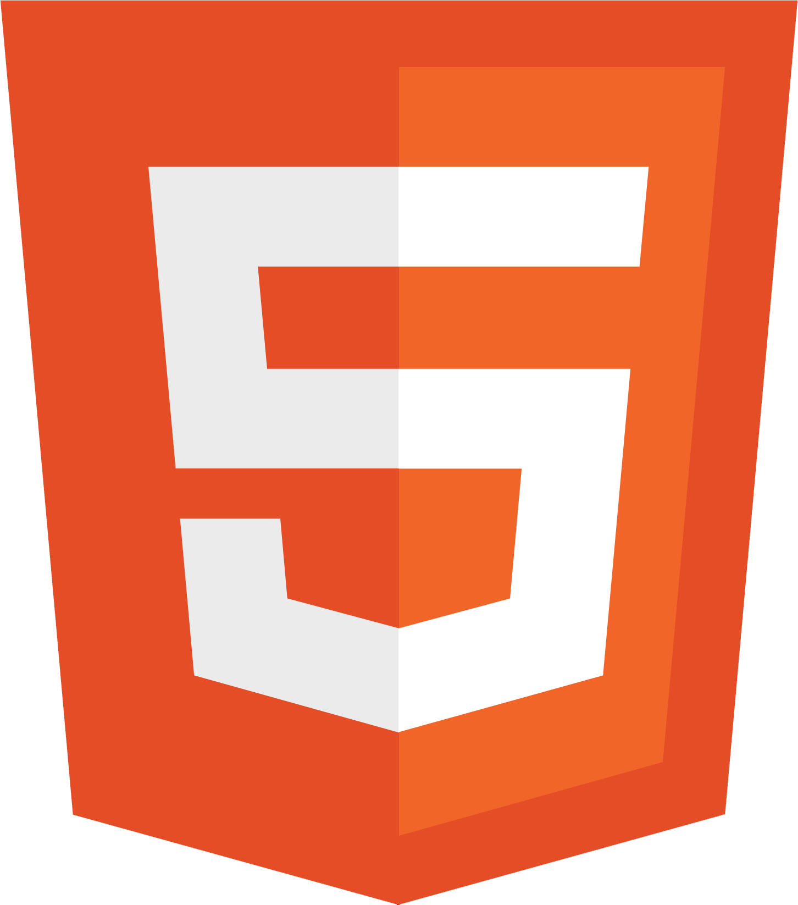
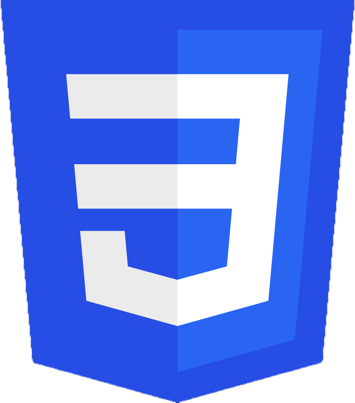

Experiências
2023-2022
2021-2020
2019-2015
 



jul de 2022 - o momento | Itapema, Santa Catarina, Brasil
Está sendo uma experiência incrível , comecei dando manutenção e implementando novas funcionalidades no software núcleo de rastreamento, destrinchando e aprendendo toda a arquitetura que foram aplicadas, poucos meses de atuação fui escalado para o tempo de criação do sistema interno, onde estou participando ativamente da criação e montando uma biblioteca componentizada que todos os outros softwares usarão.
- Manutenção e criação de novas funcionalidades no sistema Risco (C#, .net e Angular)
- Criação do software interno (C# .net e Angular).
- Criação da biblioteca de componentes front-end (Html, Css, Angular e Storybook).
nov de 2020 - fev de 2021 | Brusque, Santa Catarina, Brasil
Foi a minha primeira experiência como desenvolvedor, onde participei ativamente dos projetos fiscais da empresa utilizei toda a minha experiência com o setor fiscal para auxiliar no desenvolvimento, minhas principais atuações foram:
- Dar manutenção nos softwares fiscais existentes (C#).
- Auxiliar na criação de novas funcionalidades nos softwares fiscais.
- Auxiliar os colaboradores em caso de dúvida ou problema durante o uso dos softwares.
nov de 2015 - jun de 2019 | Itapema, Santa Catarina, Brasil
Como suporte técnico, atendia ligações para auxiliar os clientes, acumulei muito conhecimento sobre a área. Mesmo que não fosse meu cargo, desenvolvi e dei manutenções em diversas ferramentas em VB,C#, Java, incluindo o site institucional da empresa.
-Manutenção no sistema android (Java) (JR Pedidos).
-Criação de aplicação android (Java) para auxiliar técnicos externos a localizar dados dos clientes para
visita (com google maps sem precisar digitar endereço, ligação direto do aplicativo sem precisar digitar o
numero). Tecnologias utilizadas: NodeJs como WebApi e Java para construção do aplicativo.
-Auxiliando os cliente a entender e melhor utilizar o sistema.
-Auxiliando resoluções de erros relacionados a NF-e , NFSe, NFC-e,Cupom fiscal e a realização dos mesmos.
-Resolução de erros internos do sistema.
-Realização de protótipos para melhorar o aspecto visual e a usabilidade do sistema.